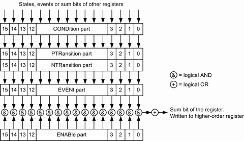

Each standard SCPI register consists of 5 parts which each have a width of 16 bits and have different functions. The individual bits are independent of each other, i.e. each hardware status is assigned a bit number which is valid for all five parts. Bit 15 (the most significant bit) is set to zero for all parts. Thus the contents of the register parts can be processed by the controller as positive integer.

The sum bit is obtained from the EVENt and ENABle part for each register. The result is then entered into a bit of the CONDition part of the higher-order register.
The instrument automatically generates the sum bit for each register. Thus an event can lead to a "Service Request" throughout all levels of the hierarchy.
The five parts of an SCPI register have different properties and function as described below.
The CONDition part is permanently overwritten by the hardware or the sum bit of the next lower register. Its contents always reflect the current instrument state.
This register part can only be read, but not overwritten or cleared. Reading the CONDition register is nondestructive.
The two transition register parts define which state transition of the condition part (none, 0 to 1, 1 to 0 or both) is stored in the EVENt part.
The positive transition part acts as a transition filter. When a bit of the CONDition part is changed from 0 to 1, the associated PTR bit decides whether the EVENt bit is set to 1:
- PTR bit = 1: The EVENt bit is set.
- PTR bit = 0: The EVENt bit is not set.
This status register part can be overwritten and read at will. Reading the PTRansition register is nondestructive.
The negative transition part also acts as a transition filter. When a bit of the CONDition part is changed from 1 to 0, the associated NTR bit decides whether the EVENt bit is set to 1.
- NTR bit = 1: the EVENt bit is set.
- NTR bit = 0: the EVENt bit is not set.
This part can be overwritten and read at will. Reading the PTRansition register is nondestructive.
The EVENt part indicates whether an event has occurred since the last reading. It is the "memory" of the condition part. It only indicates events passed on by the transition filters. It is permanently updated by the instrument. Reading the register clears it. This part is often equated with the entire register.
The ENABle part determines whether the associated EVENt bit contributes to the sum bit (cf. below). Each bit of the EVENt part is ANDed with the associated ENABle bit (symbol '&'). The results of all logical operations of this part are passed on to the sum bit via an OR function (symbol '+').
- ENAB bit = 0: The associated EVENt bit does not contribute to the sum bit.
- ENAB bit = 1: If the associated EVENT bit is "1", the sum bit is set to "1" as well.
You can overwrite and read this part. Its contents are not affected by reading.